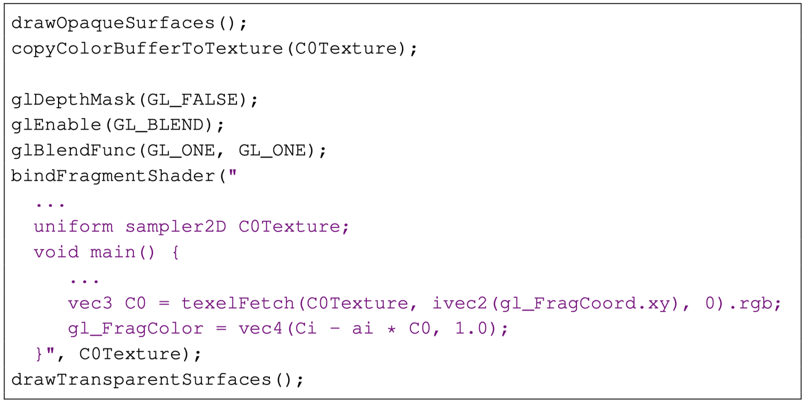

本文主要介绍了半透明渲染的背景和方法演进历史，并详细介绍Weighted Blended Order-Independent Transparency一文中的方法，感兴趣的同学还是非常建议通读原文。https://jcgt.org/published/0002/02/09/
背景
半透明/部分覆盖（part coverage）在渲染场景非常常见，比如玻璃、火焰、烟雾等，渲染中对于半透明的计算方法是非常经典的OVER操作。
OVER操作数学上通过两个变量来进行建模：透明度 $\alpha$ 和颜色 $C$，$\alpha = 1$ 代表完全覆盖住背景，$\alpha = 0.5$ 表示覆盖一半背景区域。引入非预乘颜色 $U=\alpha C$ ，对于背景颜色 $C_0$ 被颜色 $C_1$ 的表面部分覆盖，最终颜色为 $C_f$ ，根据OVER操作：
多个层级操作需要从后向前顺序混合，递归地应用数据：
需要注意的是OVER操作不符合交换律，需要按照顺序进行计算。
半透明无序渲染Order-Independent Transparency
第一个思路就是利用CPU进行排序，按顺序进行渲染，但是排序只能够解决部分问题，自遮挡、互相遮挡等问题。
顺序化
为了解决这些问题，第一个思路就是尝试让渲染的mesh变得有序，一个比较2B的方法：所有存在交错的地方/自遮挡的边缘进行mesh拆分，拆解成为当前帧顺序上严格排序的mesh序列进行渲染。可以想象每帧里进行mesh拆分重组的开销有多大，所以说是2B方法。
第二种“普通”方法，Nvidia提出的”depth peel”方法：
首先正常绘制模型，开启深度测试，获取最外层的Fragment颜色和深度。
第二次绘制模型使用第一次获取的深度信息做深度测试，获取次外层的Fragment颜色和深度。
重复步骤2，每次绘制用上一次获取的深度信息做深度测试，获得所有里层Fragment的颜色，最后从里向外透明混合所有层颜色获取最终颜色。
就像是剥洋葱一样，沿着镜头方向从近向远一层层的记录颜色和透明度，最后根据所有的层级再进行有序的OVER操作。可以看到拆成N个层级就需要N个全屏Pass，开销非常大。基于这个方案Nvidia进一步优化出Dual Depth Peeling，优化至需要只 (N/2+1) 个Pass来实现。
Blended OIT
另一个思路是重新定义半透明合成（OVER）操作使其顺序可交换，叫做blended OIT，优点有：硬件通用性、性能开销低，同样能解决自遮挡、互遮挡等表面穿透问题。首个blended OIT方法由Meshkin提出：
加权和的操作保证了合成算法的无序和质量，问题也很大，从公式中可以看出当 α 很小时，类似于覆盖操作。当 α 很大时，会变成祛除背景的其他层级颜色叠加，很可能会导致颜色空间偏移。
Bavoil and Myers改进了这一方法，提出”weighted average”公式：
和名字一样，对 α 进行加权平均，对于上文提到 α 很小或者很大的情况都进行了优化。一样拥有缺点，他们方法平均了所有表面的 α，代表着一个 $C=0 \alpha=0$ 的表面不应该被看到，但是在当前公式中却会拥有颜色。所以NVIDIA的两位作者在引用文章（Weighted Blended Order-Independent Transparency）扩展了公式：
可以看到在新公式中，$C=0 \alpha=0$ 的透明层因为乘积的原因不再影响最终的呈现颜色。同时他们还提出了深度权重有助于提升遮挡的效果(Depth Weights Improve Occlusion)。回到上个公式中，组合部分的覆盖率最高（ α 最大）的表面主导最终颜色，不论他们深度与半透明顺序。也就是说，拥有近似 α 的多个颜色会平均贡献，不管他们的顺序如何。
这和我们实际生活中的感知是不同的，比如天空中黑色的云朵前飘过一个白色的云朵，白色应该占主要色调；顺序换过来的话，黑色应该占主要色调。而不是相同的权重，为了达到这种效果，我们在公式中增加颜色与到相机的距离递减权重：

其中 $w(z_i,\alpha_i)$ 就是距离权重，其中z是相机空间的距离数值，值域 $[0,-\infty)$ 。所以 $w(z_i,\alpha_i)$ 是一个关于 $|z|$ 在 $[0,-\infty)$ 区间单调递减的函数。
权重函数就像每个表面的遮挡的估计器一样，允许一个表面通过假设它和观察者之间的其他表面的均匀分布来调节它自己的贡献。同时引入限制，GPU中计算需要再16位浮点数上进行，函数的选取要保证在有效范围内变化足够明显，所以使用多项式公式描述权重。
同样不能让权重函数影响过大，加入 $\alpha=0$ 参数，作者推荐了几个通用的权重函数，在任意场景大深度下表现都不错，z在 $[0.1,500]$ 的区间基本能映射到16位浮点数精度。
最后一个公式中， $d(z)$ 就是OPENGL中gl_FragCoord.z中的数值，也就是：
每个公式都进行了值域裁剪，原因是在 $|z|$ 很小 α 很大或者 $|z|$ 很大 α
很小的情况下，会产生16位float值域溢出，导致效果错误。即便有了值域限制，在20多层半透明叠加后可能放大值域问题，仍然有可能溢出。下图是4种方法值域图表：
在大部分场景下，这种深度加权的blended OIT方法非常接近使用排序的半透明混合方式，并且能够在半透明穿插的情况下得到良好的效果。
对于粒子系统和头发系统，游戏引擎中一个场景会处理多个粒子、头发系统，单独进行提交draw call。可以在gpu上对于系统粗略的排序，在每个系统中使用本文的OIT方法进行渲染。
Blended OIT限制
文章也提到该方法的使用限制，在下列情况下Blended OIT方法表现质量会受到影响：
- 场景中深度范围很大，在单个pass中提交多个半透明紧密结合的群体；在这种情况下很难选择既能够区分单个集合，还能够在集合中区分半透明层的深度函数。
- 方法和深度相关，也就是半透明的mesh放在相机近处和远处颜色会有所差异，但这种差异一般是可以接受的。
同时再回顾下本方法的隐含假设：
- 部分覆盖/半透明叠加的位置与层级不相关，类似自遮挡、互相遮挡的情况；
- 深度上尽可能分布均匀，或者颜色上尽可能接近；
- 对于靠近的表面颜色精度最重要，在整个深度范围内精度都很重要。
Blended OIT实现
说了算法原理，我们看看如何在渲染管线中实现，回到OVER操作上。在OPENGL中通过Blend来实现，在打开Blend的情况下，OpenGL以下面的方程进行混合：
对比OVER操作：

$C_0$ 对应 $C_dest$ 、 $C_1$ 对应 $\alpha C_{src}$，是预乘过的颜色值，设定因子为src乘以 α ，dest为乘以 $1-\alpha$ ，按顺序递归地执行OVER操作等价于opengl中多个半透明drawcall。可以看到，由于Blend操作可以指定因子和操作，公式中的多项颜色、透明度求和、求积都是利用Blend机制来实现的。对于Blended OIT方法，先来看第一版方法的实现，对应公式：
OpenGL伪代码实现如下：

Color和 α 的因子设定为1，将最终着色带入Blend函数，单次Blend公式变为：
合并后：
多次叠加就得到我们的公式，通过这个公式的推导可以得到一个结论，α 的操作交给Blend Function，累加的系数放在shader中颜色部分。同样的对于最终版本的方法：
实现如下：
实现过程非常复杂，我先逐步拆解，首先是，除法该如何表示？本文拆分为两个PASS，第一个PASS输出分子和分母，对应framebuffer绑定了两个颜色输出（A-RBGA16F和B-R16F），公式拆分如下：
- 分子部分对应gl_FragData[0].rgb，利用颜色混合函数GL_ONE、GL_ONE，组成公式部分 $\sum_{i=1}^nC_i * w(z_i, \alpha_i)$
- 分母部分对应gl_FragData[1].r，利用颜色混合函数GL_ONE、GL_ONE，组成公式部分 $\sum_{i=1}^n\alpha_i * w(z_i, \alpha_i)$
- 部分存在gl_FragData[0].a，利用透明度混合公式GL_ZERO、GL_ONE_MINUS_SRC_ALPHA，组成 $\prod_{i=1}^n(1-\alpha_i)$
第二个PASS中除去排除数值范围限定的部分，主要目标就是将已有信息项组合成最终公式，将上面123环节的产出分别用XYZ代表并带入到公式中，得到：
看到这个公式就很容易理解了，把Z当做新的 α ，X/Y当做颜色，指定颜色Blend方法为GL_ONE_MINUS_SRC_ALPHA、GL_SRC_ALPHA进行一遍全屏绘制就可以了。
Demo

总结
整理下全文的思路：
- 现代半透明渲染是基于OVER操作符进行的->
- OVER操作符不符合交换律，要求顺序->
- 排序只能解决一部分半透明问题->
- 引出Blended OIT算法，通过变种混合公式，使其顺序无关->
- 早期方法未考虑权重与边界条件->
- 引出本文介绍算法，既解决大部分边界条件，同时提出深度权重提升效果->
- 分析公式在Shader中的实现方案，巧妙利用两个PASS完成计算。